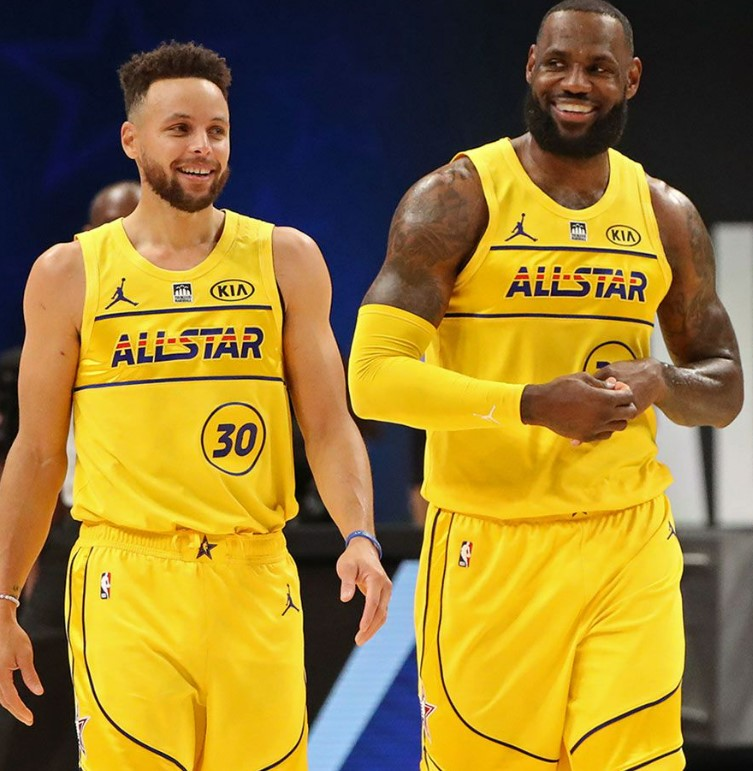
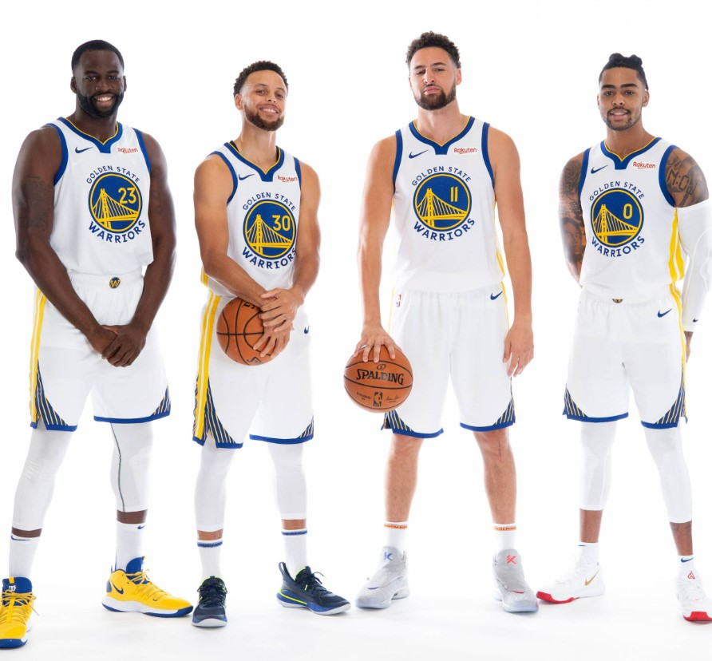
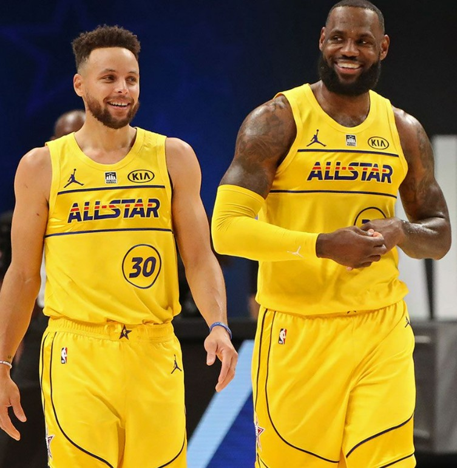
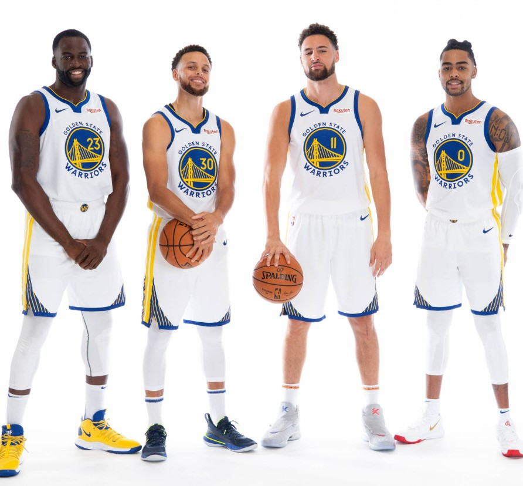
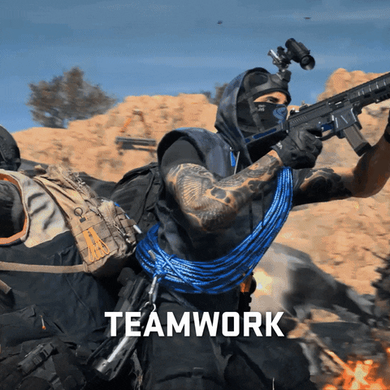
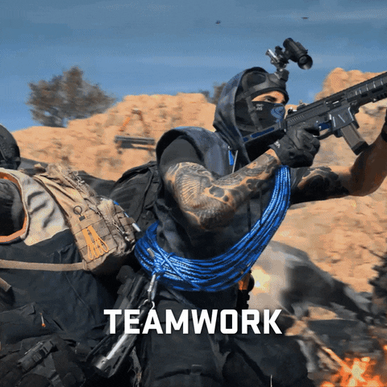

Mes centre d’intérêt personnel
Bascketball :
Donc pour mon expérience sportive, j'ai pratiqué beaucoup de sports différents qui se concentrent sur mes qualités physiques et mentales. au départ j'ai fait 1 ans d'académie de football dans ma ville natale quand j'étais jeune puis j'ai fait 2 ans de basket vers l'âge de 12 ans puis après j'ai commencé des sports qui font travailler les muscles comme la musculation et un peu de self-défense et jusqu'à ces jours-ci, je pratique dans la salle de musculation et je fais de mon mieux pour rester en bonne santé.Mais le basket-ball est en quelque sorte le sport qui m'a rendu heureux et j'y joue toujours quand je le peux. Le basket-ball est un sport d'équipe qui oppose 2 équipes de 5 joueurs sur un terrain. L'objectif ? Faire passer un ballon dans un cerceau situé à 3,05 mètres du sol pour marquer des paniers. Les points attribués varient en fonction de la distance du tir.Il y a 3 points pour un tir lointain de la balle dans le panier et 2 points pour un tir rapproché de la balle dans le panier.Une équipe de basketball est généralement composée de joueurs, d'un entraîneur et de ses adjoints, d'un capitaine qui dirige sur le terrain, de remplaçants prêts à entrer en jeu, d'arbitres qui veillent au bon déroulement du match, et de supporters passionnés. Le staff technique, comprenant des spécialistes de la tactique et de la condition physique, travaille en collaboration pour maximiser les performances de l'équipe. L'unité et la coordination entre tous ces éléments sont essentielles pour atteindre le succès sur le terrain.Dans le basketball, les différents postes comprennent le pivot, souvent spécialisé dans la protection du panier et les rebonds, et l'ailier fort, polyvalent tant en attaque qu'en défense. Ces joueurs occupent des positions clés près du panier, apportant une diversité de compétences cruciales pour l'équilibre stratégique de l'équipe sur le terrain.et j'admire dans ce sport les joueurs professionnels comme lebron james et stephan curry.Je l'ai beaucoup pratiqué tout au long de ma vie et j'en ai tiré de nombreuses qualités.(Travail d'équipe,respect des règles,confiance en soi,développement personnel ,travail acharné)vous trouverez ci-dessous des images des deux plus grands joueurs du jeu de bascket.
 



Jeux videos :
Pour mon deuxième point d'intérêt, j'aime beaucoup plus jouer aux jeux vidéo que tout ce que les jeux vidéo m'ont aidé à développer dans la vie, d'abord en me donnant des attributs comme la concentration sur les choses, le travail d'équipe et une bonne stratégie, la planification des projets et bien d'autres choses.J'ai appris la patience et le travail en jouant à différents jeux et j'ai développé ma capacité à résoudre différents problèmes en jouant à des jeux de puzzle et bien plus encore.Les jeux auxquels je joue sont très variés, depuis les jeux de tir à la première personne comme Warzone, Fortnite, jusqu'aux jeux effrayants comme Phasmophobia, ou les jeux de puzzle. Mais je joue surtout à Warzone qui est un jeu de tir à la première personne où il y a beaucoup de modes différents, mais celui auquel je joue particulièrement est Battel Royal où 100 personnes sautent d'un avion vers une grande carte où ils pillent des armes et obtiennent le matériel dont ils ont besoin pour se battre et arriver au sommet et gagner le match en étant le dernier survivant.
 
